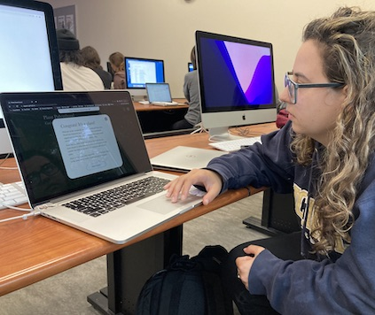
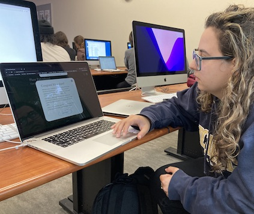

- Instructions:
I noticed that users were confused about the purpose of the game from the instructions overlay. This was either because the instructions were too long so they did not read through it or because the important parts of the instructions did not stand out from the context of the introduction. Users spent at most 5 seconds reading the instructions before beginning the game. Users also did not click the "?" button if they were confused about the game because they wanted to figure it out from playing or they did not know the instructions are opened by that button.
Plan: I aim to improve the instruction overlay by separating the context of the game with the gameplay instructions. Currently, the instructions are intertwined with the context but users are confused about what content is related to the game play and are more likely to miss important information. By separating the instructions onto a different page, I can add more informaiton without making the welcome overlay too crowded and overwelming for users.
- Visual Feedback:
Users liked the visual cues related to how the plant's health changed as each value changed, like how the icons pop out as it increments or decrements. However, users were confused by how the resource values connected to the plant's overall health. They were not sure if they needed to get the highest number or a specific amount would qualify as "winning" the game so the goal of the game was unclear. One user confused the health bar with a button because the styling was similar so they recommended making it look more distinct as a progress bar instead of a button.
Plan: I plan on adding progress bars that show the optimal range for each resource so that users know what values to aim for. A simple solution to this would be to tell the users the resource values for the "perfect" health so their goal is to maintain those values. A more effective solution would be to add a visual that updates every day. This reduces memory load so that users do not have to remember the "perfect" amount for three different resources.
- Restarting the Game:
Because users were not sure when the game would end, they were confused about how to start a new game. One user reloaded the game to restart and another clicked through the settings to try to find a restart button. A user suggested having a restart button somewhere on the settings page so that it is accessible during gameplay instead of at the end of the game.
Plan: I plan on implementing several features so that the gameplay is more clear. My first goal is to add a "restart" button that is available on the screen throughout the game or on the settings page. I also want to switch the calendar counter so that it counts down instead of up so that users are less confused about when the game ends, reducing the need for them to restart the game or reload the page.
 
